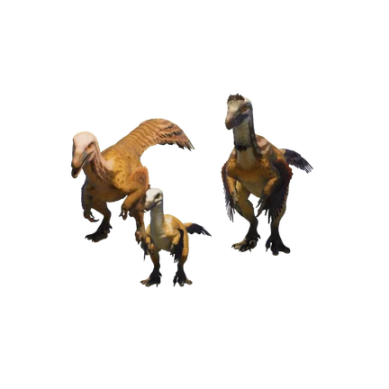
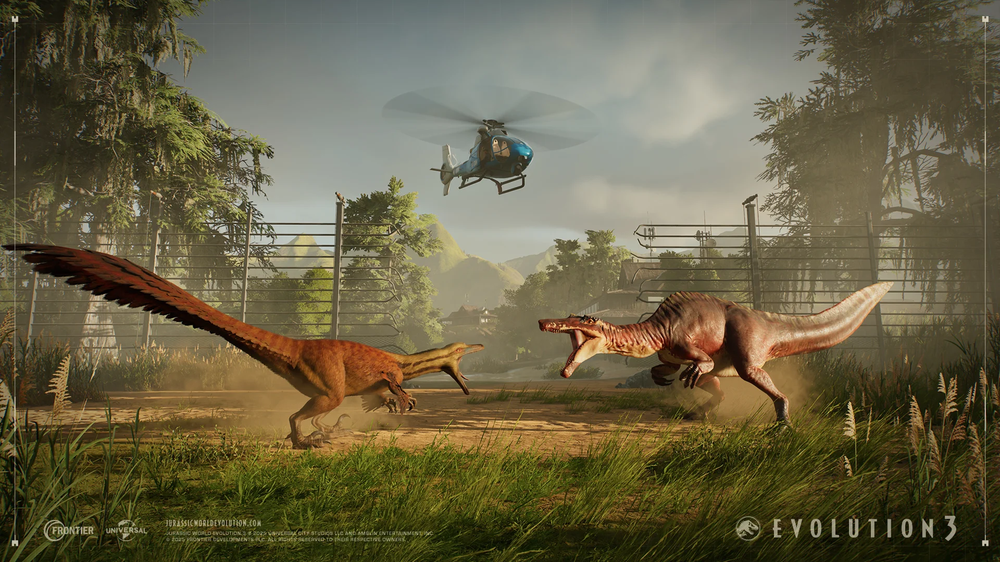
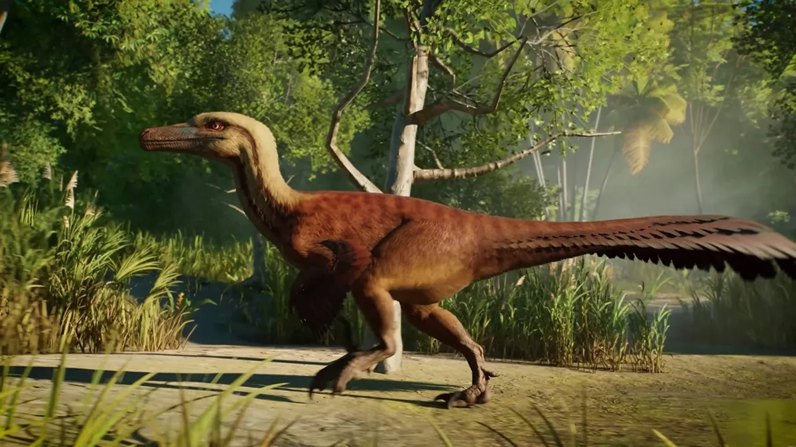
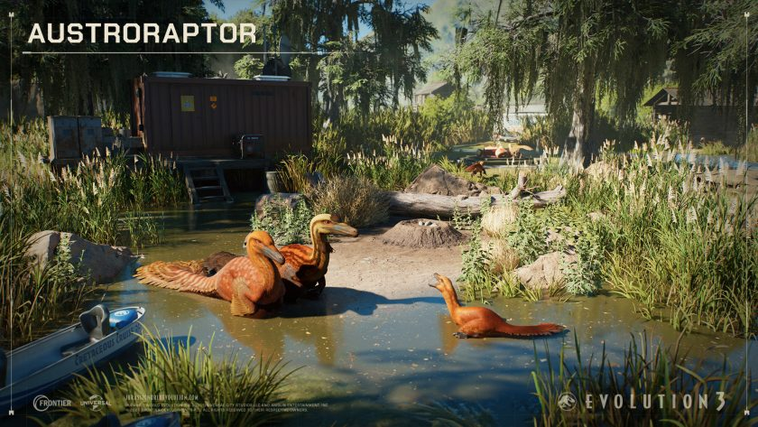
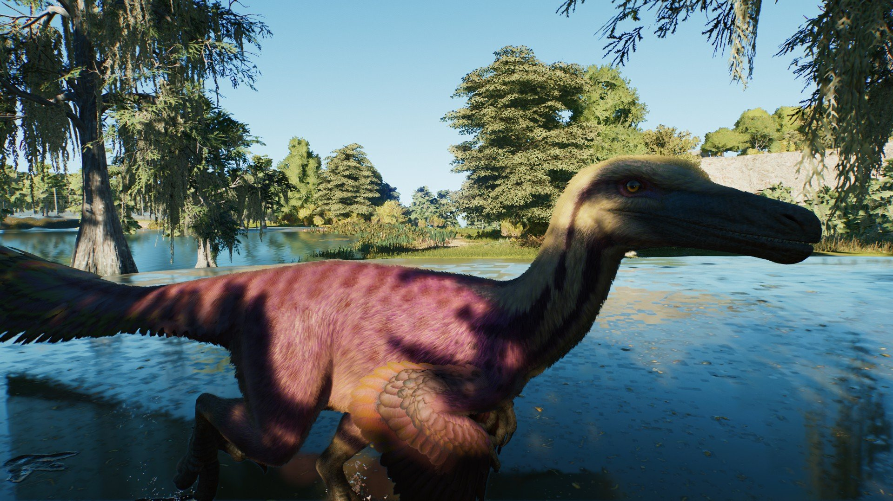
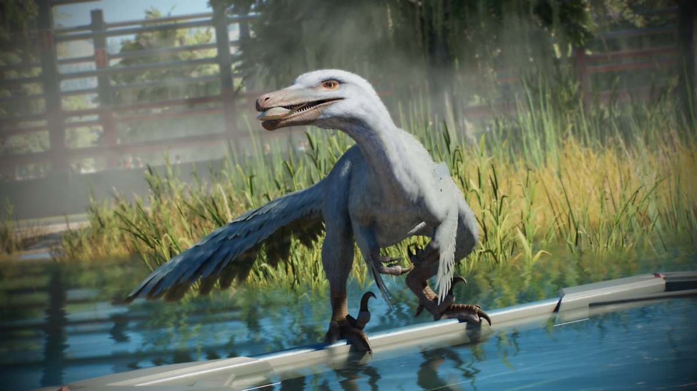

Austroraptor es un género de dinosaurio terópodo, originario del Cretácico Superior de Sudamérica. Era un pariente lejano de mayor tamaño de los dromaeosaurios como Velociraptor; sin embargo, se cree que Austroraptor y sus parientes, los Unenlagiinos, podrían constituir una familia separada conocida como "Unenlagiidae", distinta de los dromaeosáuridos como Velociraptor, Achillobator, Deinonychus y Utahraptor, y la cual incluira a dinosaurios como Buitreraptor, Unenlagia, Rahonavis y posiblemente especies como Pyroraptor y Halzakaraptor.
Un posible pariente mayor del temible Velociraptor (aunque bien podría no ser un dromeosáurido), el Austroraptor es un dinosaurio bípedo unenlagiino piscívoro con plumas que vivió durante el Cretácico Superior, hace unos 70 millones de años, en Sudamérica. Con una longitud de entre cinco y seis metros y un peso de 300 kg, el Austroraptor posee un cráneo alargado con mandíbulas adaptadas para la pesca y antebrazos relativamente cortos en comparación con otros dromeosáuridos (si es que lo es). El tamaño del Austroraptor es comparable al de grandes dromeosáuridos como el Utahraptor y el Achillobator.
Con un nombre que se traduce como "Ladrón del Sur", Austroraptor fue descubierto por primera vez en 2002 en la Formación Allen de Argentina y nombrado en 2008. Con una longitud de entre 5 y 6 m (16 y 20 pies) y un peso de entre 300 y 520 kg (660 a 1150 lb), es el dromeosáurido más grande (si es que realmente es un dromeosáurido) jamás encontrado en el hemisferio sur, así como uno de los dromeosáuridos más grandes (sigue siendo muy grande para la mayoría de los dromeosáuridos, aunque probablemente no sea uno de ellos) jamás descubierto, rivalizado o superado en tamaño por dromeosáuridos de tamaño similar como Utahraptor.
El Austroraptor habitó lo que hoy es Argentina, en Sudamérica, durante el Cretácico Superior, hace entre 76 y 68 millones de años, junto con otras especies de dinosaurios (como el Carnotaurus) y algunos de los primeros mamíferos. En este ecosistema semiárido, rico en estuarios y marismas, abundaban los peces, y es probable que el Austroraptor tuviera una dieta piscívora debido a sus dientes, que se asemejan a los de los espinosáuridos, además de cazar presas terrestres.





